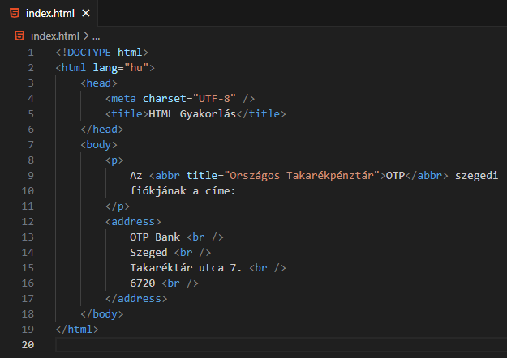
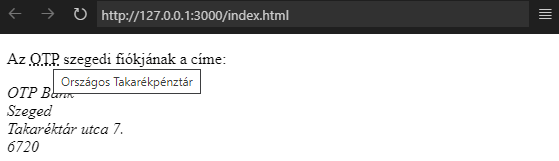
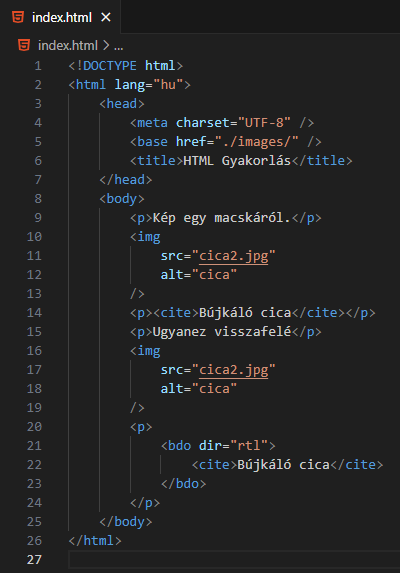
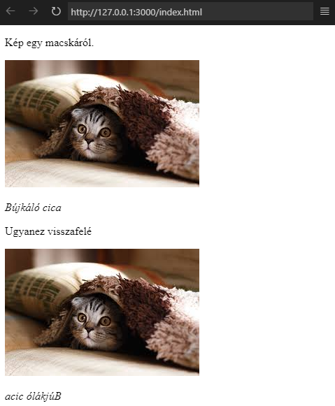

Mit lehet tudni a következő HTML elemekről: abbr, address?

A fenti kód eredménye.

Az abbr-elem beágyazott elem.
Mozaikszavak írására használjuk a
title-attribútummal, amely a teljes szavakat
tartalmazza.
Az address-elem blokkszintű elem.
Elérhetőség (cím, e-mail, telefonszám stb.)
megjelenítésére használjuk.
Alapértelmezetten dőlt betűvel szedve.
Mit lehet tudni a következő HTML elemekről: cite, bdo?

A fenti kód eredménye.

A cite-elem beágyazott elem.
Műalkotások címének jelölésére használjuk.
Alapértelmezetten dőlt betűvel szedve.
A bdo-elem is beágyazott elem.
A szöveg írásakor annak irányának a jelölésére
(bi-directional override).
Az irányt a dir-attribútumban adjuk meg.
Például: rtl-right to left (jobbról balra)
Készítsünk el egy weboldalt amelyben műalkotásokból idézünk
röviden és hosszan. Mutassunk be legalább egy festményt és
egy szobrot képpel, megadva annak a múzeumnak a címét, ahol
találhatóak.